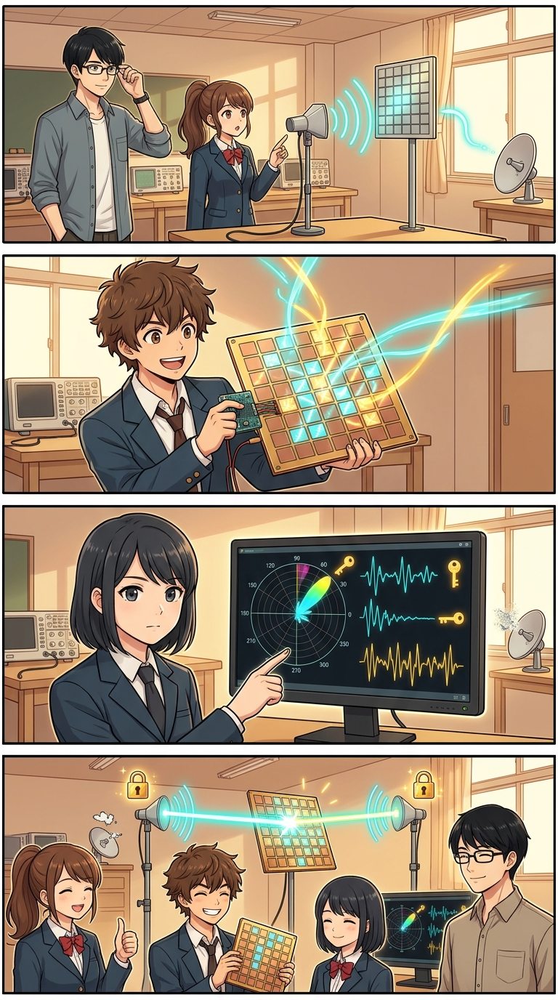
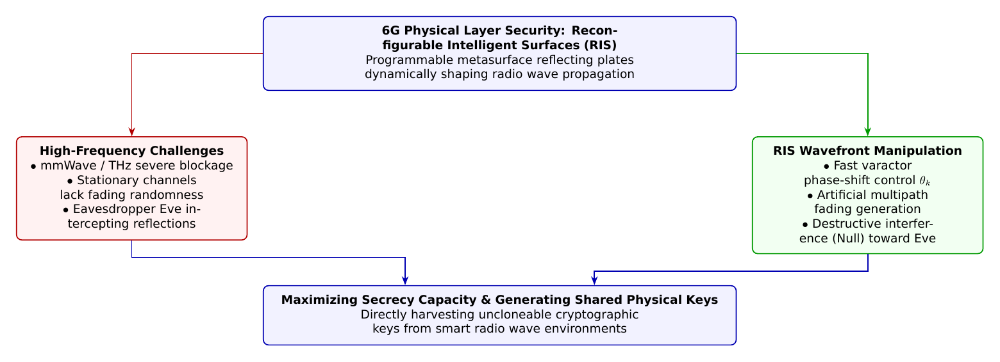

🎨 4コマ漫画挿絵（文字なし）
AI高解像度生成
▲ 【挿絵】青葉台高校 情報科学部＆帝都科学大学サイバーディフェンス・ラボでの実践シーン
💬 4コマ漫画キャラクターセリフ (Story Dialogue Script)
日・英バイリンガル (JA / EN)[葵]「壁に当たった電波の跳ね返る向きを、パソコンから自由自在に変えられるの！？」
[Aoi] "We can dynamically steer the reflection angle of radio waves bouncing off walls from a laptop!?"
[葵]「見通しが悪いビル影だと電波が届かないし、反射波を盗聴者に拾われたらひとたまりもないよ！」
[Aoi] "Shadowed alleys kill signals, and stray reflections caught by eavesdroppers ruin confidentiality!"
[蓮]「イブの方向には電波を完全に打ち消すヌル（Null）を向けつつ、ボブとアリスの間で物理現象から直接秘密鍵を生成するんだ！」
[Ren] "We project destructive nulls toward Eve while generating secret cryptographic keys from physical wave entropy!"
[全員]「電波の反射が織りなす空間の盾が、次世代6Gのセキュアな社会を照らし出す！」
[All] "Spatial wave shields woven by smart reflections illuminate tomorrow's secure 6G world!"
📖 小説本文
冬の夕空が広がる青葉台高校の物理・情報実験室。壁一面に貼り付けられた、縦横数十センチ四方の薄いプリント基板――碁盤の目のようにびっしりと並んだ微小な銅箔パッチアンテナのアレイが、LEDの制御信号を受けて淡い光を反射していた。
「……蓮くん、この壁に貼ってあるタイルみたいな板、何？」
橘葵が興味深そうにパッチアンテナの表面を観察した。 「実験室の壁にアートのポスターでも貼ったのかと思ったけど、裏から無数のフラットケーブルがコントローラ基板に伸びてるし……」
「これこそ、5Gのその先――2030年代の『6G通信』における最大の技術革新と呼ばれる**『再構成可能インテリジェントサーフェス（RIS: Reconfigurable Intelligent Surface / メタサーフェス反射板）』**ですよ！」
神崎蓮が手元のソフトウェア無線（SDR）端末を操作しながら声を弾ませた。 「従来の無線通信は、ビルの壁や家具に電波が当たって乱反射するのを『ただ受け入れる』しかありませんでした。でもこのRISは、数千個のメタサーフェス素子に組み込まれたバラクタダイオードの電圧をデジタル制御することで、**『電波が跳ね返る角度（位相・偏波・振幅）』をプログラミングによってリアルタイムに自在に曲げることができる**んです！」
「ええっ！？ 電波の反射をパソコンでコントロールできるの！？」葵が目を丸くした。「まるで電波の鏡を自由自在に動かしてるみたい！」
「そう！ そしてこの技術は、通信エリアを広げるだけでなく、**『絶対に盗聴できない究極の物理層セキュリティ（Physical Layer Security: PLS）』**を実現する決定打になるんだよ」
ドアを開けて入ってきた城崎悠真が、横浜国立大学SPIRAL（落合秀樹教授、四方順司教授ら）の最新論文スライドをプロジェクターに投影した。
白石結衣がホワイトボードに電磁気学のマクスウェル方程式とチャネル状態情報（CSI）の行列を書き始めた。 「第61話で学んだように、送信者アリスと受信者ボブの間の無線フェージング（電波の揺らぎ）の相反性を利用すれば、事前共有鍵なしで空間から直接暗号鍵を生成できます。しかし、障害物が多い場所や、電波の揺らぎが少ない静止環境では、十分なエントロピー（乱雑さ）が得られず、鍵の生成速度が落ちてしまうという課題がありました」
「そこにRISが加わることで、何が起きると思う？」悠真が葵に優しく問いかけた。
---
📊 セキュリティ構造図解 (TikZ LuaLaTeX生成)
国家安全基準・工学図解
▲ 【技術構造図】IPAデジタルスキル標準・国際規格に準拠した仕組みのモデル化